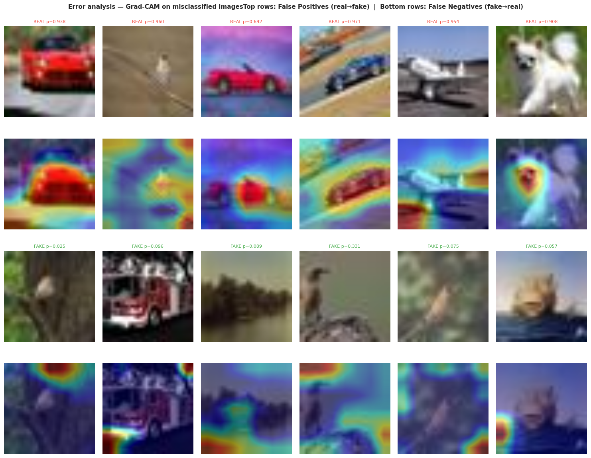

The AI Challenge
AI-generated images look realistic to humans, but they leave unique forensic fingerprints in the frequency domain. This project targets those artifacts rather than semantic content to provide robust detection.
Forensic Stack
- Base: EfficientNetB0 (ImageNet)
- Analysis: FFT (Fast Fourier Transform)
- Engine: PyTorch 2.x
- Explain: Grad-CAM (Task 4)
- Strategy: 2-Phase Fine-tuning
Final Results

Project Methodology
01. Forensic Exploratory Data Analysis
Evaluated the "blind spots" of AI generators. Used Fast Fourier Transform (FFT) to identify systematic artifacts in the radial power spectrum. Confirmed that fake images exhibit significant divergence in mid-high frequency bands compared to authentic camera photos.
02. Transfer Learning Strategy
Transitioned from a scratch-trained CNN baseline (80% recall) to EfficientNetB0. Implemented a 2-phase training cycle: initially training the classifier head, followed by full-body fine-tuning with a low learning rate.
03. Grad-CAM Explainability
Used Gradient-weighted Class Activation Mapping to visualize what the model "sees". Validation confirmed the model targets texture irregularities and high-frequency edge artifacts rather than semantic biases, ensuring forensic reliability.
Forensic Evidence

FFT Analysis: Camera vs AI Signature

Grad-CAM: Targeting Texture Artifacts
Critical Performance Improvements
The move to transfer learning not only improved raw accuracy but also fundamentally better calibrated the model's confidence scores.
Baseline Accuracy
89.7%
Final Accuracy
95.1%
F1 Improvement
+0.065
Check the Forensic Repo
Explore the PyTorch implementation and forensic notebooks.